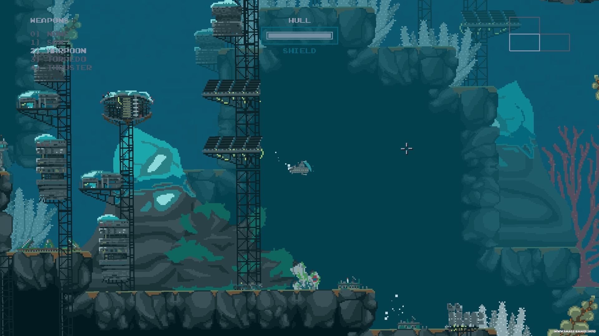

<canvas id="ca"></canvas>
<canvas id="vfx"></canvas>

<script>

    ctx = ca.getContext`2d`
    ctx2 = vfx.getContext`2d`
    ca.width = screen.width
    ca.height = screen.height
    
    vfx.width = screen.width
    vfx.height = screen.height

    zoomF = 1.1
    expoRadius =1
    expoLive = 0
    
    expoCenterX = 350
    expoCenterY= 350
    
    
    ca.onclick = function(e) {
        expoLive = 60;expoRadius =1
        expoCenterX = e.offsetX
        expoCenterY= e.offsetY
    }

    
    
    function step() {
        ca.width+=0
        vfx.width+=0
        
        ctx.drawImage(aqua,0,0)
        if(expoLive > 0) {
            
        ctx2.drawImage(ca,expoCenterX-expoRadius/2,expoCenterY-expoRadius/2,expoRadius,expoRadius, 0,0,expoRadius*2,expoRadius*2)
        
        
       // ctx.drawImage(vfx,0,0,screen.width,screen.height)
        
    ctx2.globalCompositeOperation = 'destination-in'

        ctx2.beginPath()
        ctx2.arc(expoRadius,expoRadius, expoRadius, 0, Math.PI*2)
        ctx2.arc(expoRadius,expoRadius, Math.max(0,  expoRadius-expoLive), 0, Math.PI*2,true)
        ctx2.fillStyle = "#00ff00;"
        ctx2.fill()
        
        ctx.drawImage(vfx,expoCenterX-expoRadius,expoCenterY-expoRadius,screen.width,screen.height)

        }
        
        requestAnimationFrame(step)
        expoRadius++
        expoLive--
    }
    
    step()
    
   
    
</script>

putImageData(ImageData imagedata, 
float dx, 
float dy, 
float dirtyX, 
float dirtyY, 
float dirtyWidth, 
float dirtyHeight) 

drawImage(Object image, 
float sx, 
float sy,
float sw, 
float sh, 
float dx,
float dy,
float dw, 
float dh)